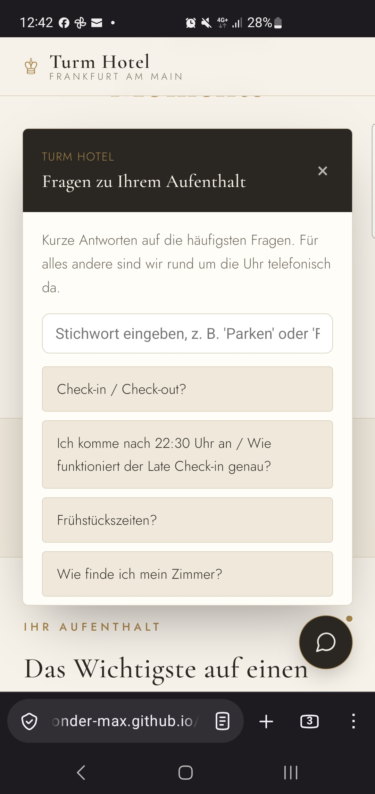
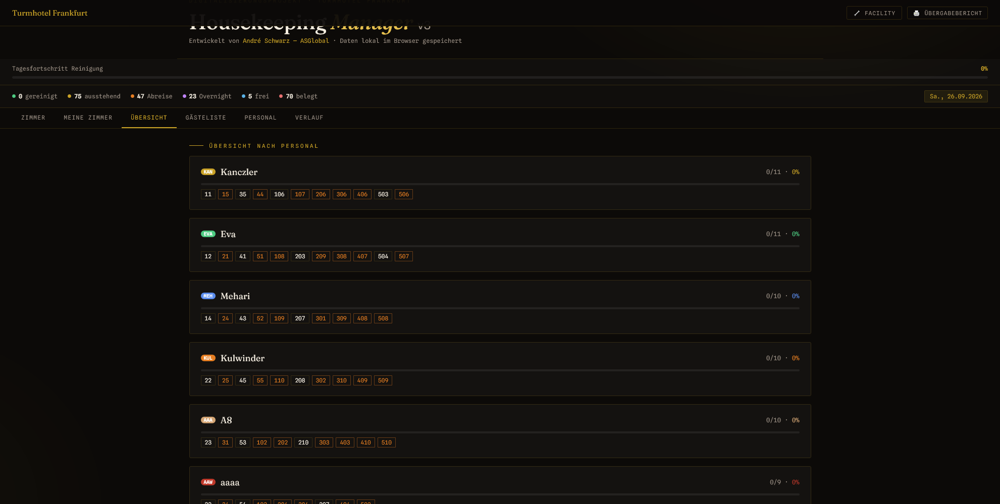
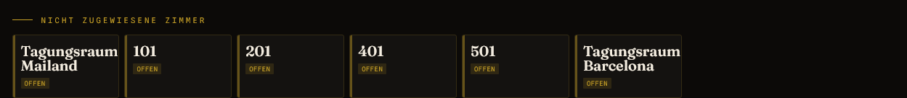
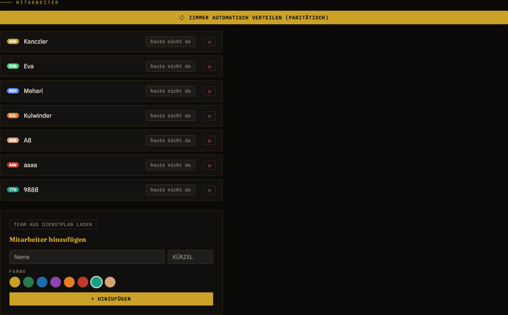
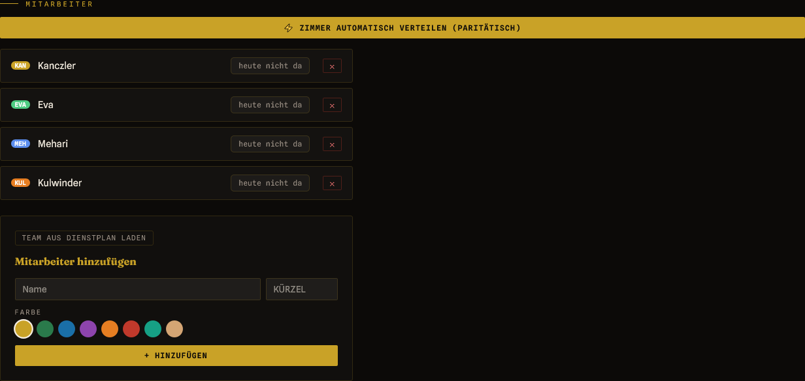
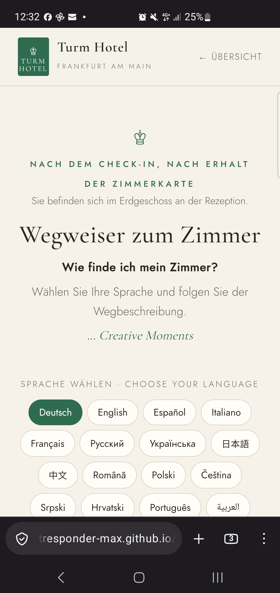

Nicole, Tanja, Dario, Ralf — so sieht das Reinigungs- und Personal-Tool im echten Einsatz aus: Zimmerverteilung, Teamübersicht und Statuswechsel auf einem Bildschirm — entwickelt neben der eigenen Rezeptionsarbeit, für ein internationales Team, das bislang per Zettel und Telefon koordiniert wurde.
Ein Zettel kann nicht zurückfragen. Ein Anruf kommt nicht immer durch. Ein Bildschirm, den alle gleich lesen, schon.
Diese Seite ist nicht von oben in Auftrag gegeben worden — sie ist ausdrücklich aus eigener Initiative entstanden, aus der täglichen Praxis an der Rezeption heraus. Doppelte Zettelwirtschaft beim Housekeeping, kein Abgleich zwischen den Handys im Team, immer wieder dieselben Fragen am Tresen. Daraus wurde zuerst der Housekeeping Manager, dann der mehrsprachige Wegweiser, dann ein Gästeportal mit FAQ-Widget — echte, vorab geprüfte Antworten auf die häufigsten Gästefragen, bewusst kein KI-Chatbot mit Halluzinationsrisiko.

Jede und jeder von euch schaut sich das gleich aus einem anderen Winkel an — hier direkt für jeden von euch übersetzt:
Dir als Direktorin geht es ums große Bild: ein System statt drei Baustellen, saubere Kennzahlen bei jeder Übergabe, kein Flickenteppich zwischen Rezeption und Housekeeping.
Was am Ende zählt, entscheidet sich ohnehin daran, was bei Tanja im Alltag ankommt — direkt im nächsten Feld in ihre Sprache übersetzt.
Weniger Wartezeit für die Housekeeping-Kräfte, weil die Zimmerliste nicht mehr abends nachgereicht werden muss. Weniger Frust, weil niemand mehr auf einen Rückruf wartet, der nicht kommt. Mehr Kapazität für die kleineren Zusatzaufgaben, die sonst als Erstes hinten runterfallen.
Und falls dir oder Nicole beim Zusehen noch etwas fehlt: Das Tool ist erweiterbar — jede zusätzliche Idee kann noch eingebaut werden.
Du kennst das Tool schon aus dem Alltag an der Rezeption. Genau die Version, die heute läuft, ist die Lösung, die du wolltest: Scan und Verteilung in einem Schritt, ohne Umweg über eine zweite Seite oder einen CSV-Export.
Kurz in deiner Sprache: Alle Werkzeuge laufen als statische Seiten über GitHub Pages, ohne eigenen Server, den wir pflegen müssten. Die Synchronisation zwischen den Handys übernimmt eine Firebase Realtime Database. Der Foto-Scan liest die Gästeliste per Texterkennung direkt im Browser — es geht nichts an einen fremden Server.
Jede Änderung läuft über einen dokumentierten Pull Request im GitHub-Repo, nicht über einen stillen Patch.
Das Turmhotel Frankfurt wird von einem internationalen Team gereinigt und betreut. Bisher lief die tägliche Zimmerverteilung so, wie sie in den meisten Häusern läuft: handschriftliche Listen, mündliche Absprachen an der Rezeption, Rückfragen per Telefon, wenn sich am Vormittag etwas ändert. Funktioniert — bis jemand fehlt, bis eine Rückfrage in der zweiten Sprache nicht ankommt, oder bis ein Zettel zwischen zwei Schichten verschwindet.
Zimmerlisten auf Papier, jede Änderung ein Anruf. Bei einem mehrsprachigen Team ist genau das Telefonat oft der unsicherste Schritt — und wer gerade im Zimmer oder Keller ohne Empfang arbeitet, ist schlicht nicht erreichbar.
Jede Mitarbeiterin und jeder Mitarbeiter bekommt ein Kürzel und eine Farbe statt eines Satzes am Telefon. Die Verteilung ist auf einen Blick sichtbar — unabhängig davon, in welcher Sprache man sie erklären würde.
Alles bereits live im Tool: Der Foto-Scan erkennt jetzt mit, wie viele Betten und Kinderbetten pro Zimmer zu beziehen sind. Zimmer, die aus „Außer Betrieb" zurückkommen, stehen separat und gelten nicht automatisch als sauber. Ein geteiltes Zimmer löst im Doppelcheck keinen Fehlalarm mehr aus. Der Übergabebericht zeigt zusätzliche Kennzahlen, und die Leerstand-Übersicht ist jetzt nach Haupt- und Nebenhaus sortiert. Ein Werkzeug für Scan und Verteilung statt zwei getrennte Schritte.
Die VorführungEin Bildschirm zeigt, was sonst über Zettel und einen Anruf an die Rezeption lief: wie viele Zimmer heute abreisen, wie viele über Nacht bleiben, was frei ist und was belegt bleibt — tagesaktuell, nicht aus dem Kopf der Schichtleitung. Darunter die Teamübersicht: jede Reinigungskraft mit eigener Farbe und der eigenen Zimmerliste.

Zimmer, die noch niemandem zugewiesen sind — samt der beiden Tagungsräume — stehen unten in einer eigenen Zeile, deutlich als „offen" markiert. Vorher war das kein Dokument, sondern Wissen, das nur in einem Kopf existierte.

Das komplette Team steht in der Seitenleiste, mit Kürzel und Farbe. Ein Klick auf „Zimmer automatisch verteilen (paritätisch)" teilt die offenen Zimmer fair auf die anwesenden Kolleginnen und Kollegen auf — nach Kopfzahl, nicht nach Bauchgefühl am Rezeptionstresen.

Fällt jemand aus — Krankheit, ein Anruf, der nicht durchkommt, ein Missverständnis am Telefon — reicht ein Klick auf das rote „X". Beim nächsten Klick auf die automatische Verteilung teilen sich die verbleibenden Zimmer neu auf das reduzierte Team auf. Keine zweite Telefonrunde, keine handschriftliche Neuverteilung auf dem Zettel.

Keine Sprachbarriere, kein Anruf, der nicht durchkommt — nur eine Liste, die für alle gleich aussieht.
Nach eigener Einschätzung aus dem laufenden Rezeptionsbetrieb rechnet André Schwarz mit etwa 20 bis 40 Minuten Zeitersparnis pro Mitarbeiter und Schicht, wenn das Tool offiziell eingeführt wird. Das ist ein Erfahrungswert aus dem täglichen Umgang mit genau den Reibungspunkten, die das bisherige System ausgemacht haben — keine externe Messung, sondern die Einschätzung dessen, der beide Abläufe selbst durchlaufen hat.
Zeitangabe: praktische Schätzung von André Schwarz aus dem laufenden Betrieb, keine geprüfte Studie.
Der Wegweiser führt Gäste nach dem Check-in in 15 Sprachen vom Empfang zum Zimmer — gedacht zum Öffnen per QR-Code, zum Beispiel auf der Zimmerkarte oder an der Rezeption.

Entwurf — muss noch überarbeitet werden. Die Seite ist per QR-Code erreichbar, aber inhaltlich noch nicht final. Euer Feedback fließt in die Überarbeitung ein, bevor sie fest ausgerollt wird.
Was in diesen Bildern zu sehen ist, ist kein Konzept auf Papier, sondern eine laufende Anwendung — die Daten bleiben lokal im Browser gespeichert, ergänzt um eine Cloud-Synchronisation zwischen den Handys. Vorab mit einer echten, aktuellen Gästeliste geprüft; die genauen Tageszahlen besprechen wir direkt im Termin. Die offizielle Einführung durch die Geschäftsführung ist der nächste Schritt, kein bereits erledigter.
Fragen im Termin heute, oder danach — schreib mir.